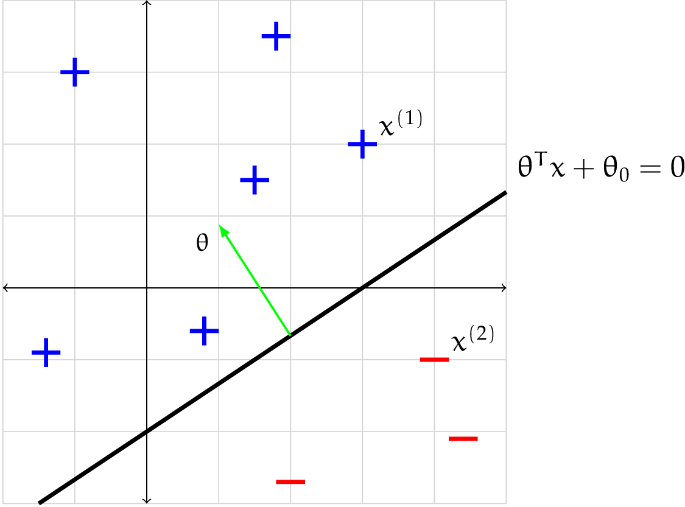
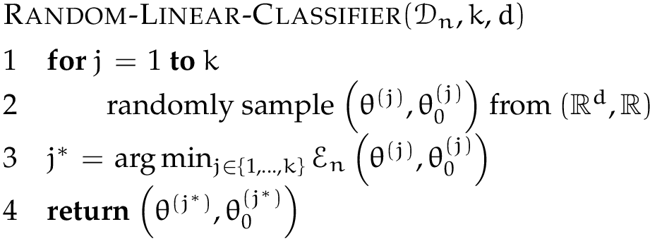
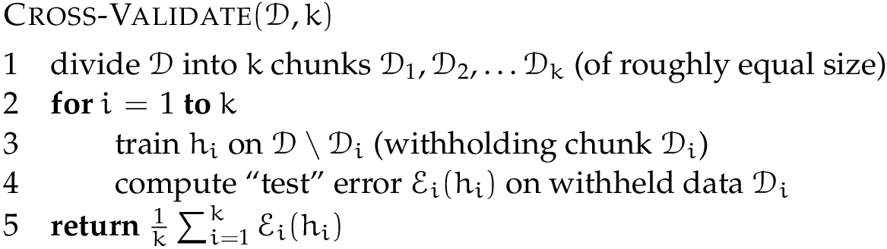

A binary classifier is a mapping from \( \mathbb {R}^ d \rightarrow \{ -1, +1\} \). We'll often use the
letter \( h \) (for hypothesis) to stand for a classifier, so the classification process looks like:
\( x \rightarrow \boxed {h} \rightarrow y \; \; \).
Real life rarely gives us vectors of real numbers; the \( x \) we really want to classify is usually something
like a song, image, or person. In that case, we'll have to define a function \( \varphi (x) \), whose domain is
\( \mathbb {R}^ d \), where \( \varphi \) represents features of \( x \), like a person's height or the
amount of bass in a song, and then let the \( h: \varphi (x) \rightarrow \{ -1, +1\} \). In much of the
following, we'll omit explicit mention of \( \varphi \) and assume that the \( x^{(i)} \) are in \( \mathbb {R}^ d
\), but you should always have in mind that some additional process was almost surely required to go from the
actual input examples to their feature representation.
In supervised learning we are given a training data set of the form
We will assume that each \( x^{(i)} \) is a \( d \times 1 \) column vector. The intended meaning
of this data is that, when given an input \( x^{(i)} \), the learned hypothesis should generate output
\( y^{(i)} \).
What makes a classifier useful? That it works well on new data; that is, that it makes good predictions
on examples it hasn't seen. But we don't know exactly what data this classifier might be tested on when we use it
in the real world. So, we have to assume a connection between the training data and testing data;
typically, they are drawn independently from the same probability distribution.
Given a training set \( {\cal D}_ n \) and a classifier \( h \), we can define the training error of \(
h \) to be
For now, we will try to find a classifier with small training error (later, with some added criteria) and hope it
generalizes well to new data, and has a small test error
on \( n' \) new examples that were not used in the process of finding the classifier.
Learning algorithm
A hypothesis class \( {\cal H} \) is a set (finite or infinite) of possible classifiers, each of which
represents a mapping from \( \mathbb {R}^ d \rightarrow \{ -1, +1\} \).
A learning algorithm is a procedure that takes a data set \( {\cal D}_ n \) as input and returns an
element \( h \) of \( {\cal H} \); it looks like
\( {\cal D}_ n \longrightarrow \boxed {\text {learning alg (${\cal H}$)}} \longrightarrow h
\)
We will find that the choice of \( {\cal H} \) can have a big impact on the test error of the \( h \) that
results from this process. One way to get \( h \) that generalizes well is to restrict the size, or
“expressiveness" of \( {\cal H} \).
Linear classifiers
We'll start with the hypothesis class of linear classifiers. They are (relatively) easy to understand,
simple in a mathematical sense, powerful on their own, and the basis for many other more sophisticated methods.
A linear classifier in \( d \) dimensions is defined by a vector of parameters \( \theta \in \mathbb {R}^ d \)
and scalar \( \theta _0 \in \mathbb {R} \). So, the hypothesis class \( {\cal H} \) of linear classifiers in \( d
\) dimensions is the set of all vectors in \( \mathbb {R}^{d+1} \). We'll assume that \( \theta \) is an
\( d \times 1 \) column vector.
Given particular values for \( \theta \) and \( \theta _0 \), the classifier is defined by
Remember that we can think of \( \theta , \theta _0 \) as specifying a hyperplane. It divides
\( \mathbb {R}^ d \), the space our \( x^{(i)} \) points live in, into two half-spaces. The one
that is on the same side as the normal vector is the positive half-space, and we classify all points in
that space as positive. The half-space on the other side is negative and all points in it are classified
as negative.
Example: Let \( h \) be the linear classifier defined by \( \theta = \begin{bmatrix} -1 \\ 1.5
\end{bmatrix}, \theta _0 = 3 \).
The diagram below shows several points classified by \( h \). In particular, let \( x^{(1)} = \begin{bmatrix} 3
\\ 2 \end{bmatrix} \) and \( x^{(2)} = \begin{bmatrix} 4 \\ -1 \end{bmatrix} \).
Thus, \( x^{(1)} \) and \( x^{(2)} \) are given positive and negative classfications, respectively.

Study Question:What is green vector normal to the
hyperplane? Specify it as a column vector.
Study Question: What change would you have to make to
\( \theta , \theta _0 \) if you wanted to have the separating hyperplane in the same place, but to classify all
the points labeled '+' in the diagram as negative and all the points labeled '-' in the diagram as positive?
Learning linear classifiers
Now, given a data set and the hypothesis class of linear classifiers, our objective will be to find the linear
classifier with the smallest possible training error.
This is a well-formed optimization problem. But it's not computationally easy!
We'll start by considering a very simple learning algorithm. A good idea to think of the “stupidest possible"
solution to a problem, before trying to get clever. Here's a
fairly (but not completely) stupid algorithm. The idea is to generate \( k \) possible hypotheses by generating
their parameter vectors at random. Then, we can evaluate the training-set error on each of the hypotheses and
return the hypothesis that has the lowest training error (breaking ties arbitrarily).

A note about notation. This might be new notation: \( {\rm arg}\min _{x} f(x) \) means the value of \( x \)
for which \( f(x) \) is the smallest. Sometimes we write \( {\rm arg}\min _{x \in {\cal X}} f(x) \) when we want
to explicitly specify the set \( {\cal X} \) of values of \( x \) over which we want to minimize.
Study Question: What do you think happens to \(
\mathcal{E}_ n(h) \), where \( h \) is the hypothesis returned by Random-Linear-Classifier, as \( k \) is
increased?
Study Question: What properties of \( {\cal D}_ n \) do
you think will have an effect on \( \mathcal{E}_ n(h) \)?
Evaluating a learning algorithm
How should we evaluate the performance of a classifier \( h \)? The best method is to measure test
error on data that was not used to train it.
How should we evaluate the performance of a learning algorithm? This is trickier. There are many
potential sources of variability in the possible result of computing test error on a learned hypothesis \( h \):
Which particular training examples occurred in \( {\cal D}_ n \)
Which particular testing examples occurred in \( {\cal D}_{n'} \)
Randomization inside the learning algorithm itself
Generally, we would like to execute the following process multiple times:
Train on a new training set
Evaluate resulting \( h \) on a testing set that does not overlap the
training set
Doing this multiple times controls for possible poor choices of training set or unfortunate randomization inside
the algorithm itself.
One concern is that we might need a lot of data to do this, and in many applications data is expensive or
difficult to acquire. We can re-use data with cross validation (but it's harder to do theoretical
analysis).

It's very important to understand that cross-validation neither delivers nor evaluates a single particular
hypothesis \( h \). It evaluates the algorithm that produces hypotheses.